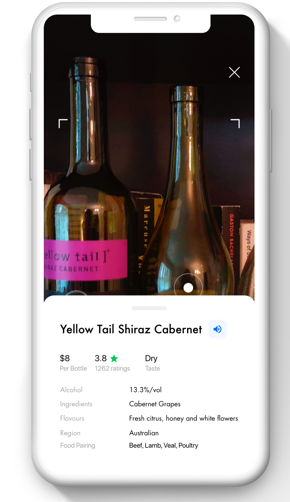
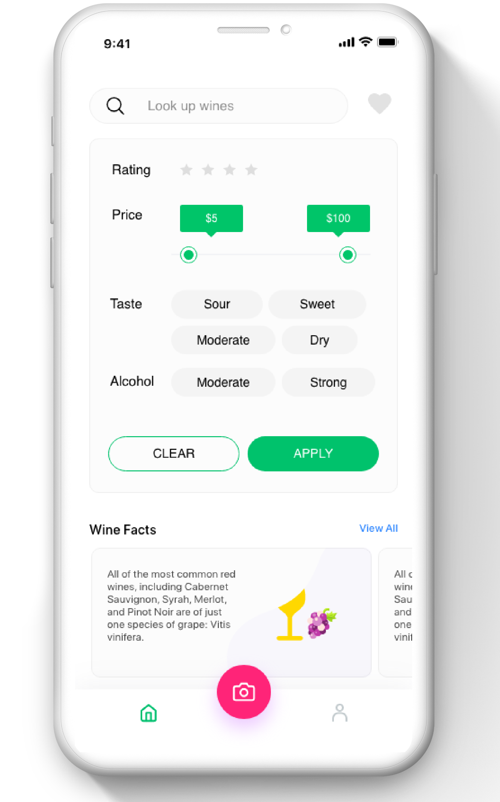

WineAR
UXD — Jan'20 - Mar'20 — Tools — Physical Prototyping + Adobe XD
Augmented Reality to enhance the in-store wine buying experience for people new to wine drinking.
Background Story
There are thousands of wines on the market which is precisely the problem. It becomes super hard to know what to buy. When Italo Calvino wrote about a similar experience- that of his protagonist, Mr Palomar, visiting a Parisian Fromagerie - he conveys the overwhelming choice facing him as an existential dilemma:
Long story short!
There are thousands of wines — it’s an overwhelming amount of choice. You're in a store, standing in the wine aisle. It's hard to know what to buy. You could call a friend, they might be unavailable. You could google and still feel like you are missing out. Or you could use an app. How do we solve this problem?
Here is what I made
Feature 01
In-store AR companion to scan wine labels and instantly learn about them without picking them up. The right amount of information for people new to wine.


Feature 02
Hick's Law - Do we need so much information? What causes anxiety and decision paralysis? Too expensive? Too strong? Too sweet? Fear of missing out? What matters to young people? Just apply these four filters and decide what to go with, if you aren't in a store.
Feature 03
Incremental knowledge about wines. Few people have time and patience to learn just about wines. But we still have to do it! Incremental knowledge is the way to go. A little bit every time you use the app.
Process & Timeline
I completed this case study over a period of 2 and a half months. This included a quick trip to the wine store, 7 user interviews, comparative study, and desktop research.

Research
Desktop Research
I set out with a literature review. I made a framework for all the questions I had and was open to anything new. It took me 2 days to learn about wines. Frankly, few people would spend two days to become an amateur wine expert. This exercise in itself meant that this is the time and energy, it can take for someone to get familiar with wines.

What do experts have to say?
Then I tried to understand the expert views, what they think about wine buying.


Understanding the buyer - what do buyers have to say?
The next step was to speak to people and understand how they navigate through this problem. I interviewed 7 people over 3 days and got pretty much similar responses from everyone. These interviews were revealing as they attested some of my hypotheses about issues while buying wine.
What has been done so far to address this?
Now that I had better understanding of the pain points, I dived into product analysis.
Field Study
Since I was designing for an in-store experience, it was necessary to visit stores and see how wines were stored and how different the experiences were in different stores.

Analysis & Findings
Affinity Mapping & Research Findings
Now was the time to synthesize the research findings and derive the core features for the solution.
User Needs, Other Influences & Design Implications
Drawing from the affinity mapping, I fleshed out the design implications as follows. On the basis of the affinity mapping I also derived the user group.
Ideation & Design
Early Sketch and Feedback
At this stage, I worked on defining the core features and comparing them with design implications drawn from the previous exercise.

Physical Prototyping - Some Wizard of Oz and trickery
I recorded videos of wine shelves and used keynote to prototype and animate labels initially.
Detailed Interaction Flow
Scenario 01
User is in a store and quickly wants to scan the labels to learn about the wines.
Scenario 02
User is not in a store but still wants to make a decision, may be for someone else who has gone to buy wine.
Evaluating the Prototype
Due to covid-19, I could not conduct in-person testing. Hence I had to share the prototypes and conduct think-out loud sessions with 4 users.
Final Interactive Prototype
Future Steps
For future, there is a lot of scope for improvement, both in visual design and features. It will be interesting to see if people also want to share their reviews or recommendations with others. I'd also like to explore the feature wine facts and see if I can classify them better.